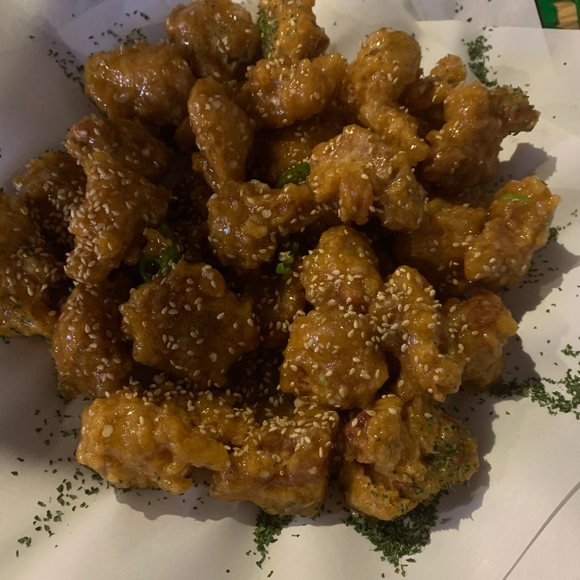

오늘은 나의 꿀꿀달링들과 신통치킨 먹은 날.  너무나 맛있는 마늘고추순살치킨. 매콤달달한 게 너무 맛있어. 이렇게 소스에 절여진 치킨 너무 좋아. 뭔가 닭강정스러운 맛이라고 하는게 더 정확하려나.
쪼금은 느끼할 수 있는 치킨을 먹었으니 국물이 필수. 매콤우동 주문 고고. 고추가 엄청 들어있어서 청양고추의 칼칼함이 엄청났던 우동. 우동은 보통 우리가 생각하는 그 우동 맛인데 청양 고추의 칼칼함때문에 해장하는 느낌 물씬.